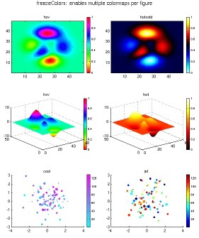
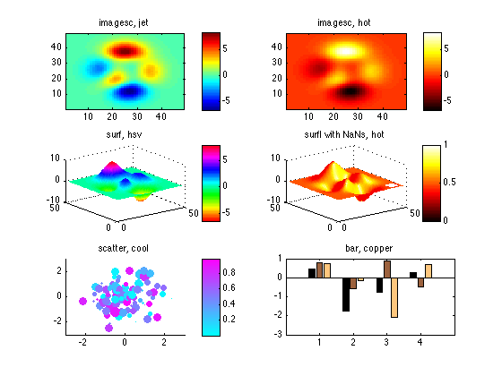
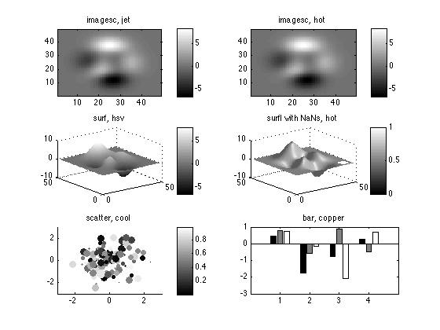

Demonstration of freezeColors / unfreezeColors
freezeColors enables you to use multiple colormaps in a single figure.
John Iversen (iversen@nsi.edu)

Contents
Problem: In MATLAB there is only one colormap per figure.
Solution: freezeColors
freezeColors provides an easy solution to create plots using different colormaps in the same figure.
freezeColors will freeze the colors of graphics objects in the current axis so that later changes to the colormap (or caxis) will not change the colors of these objects. Then, a new colormap can be applied to the next plot without changing the appearance of the first axis. The original, indexed, color data is saved, and can be restored using unfreezeColors, making objects one again subject to change with the colormap.
freezeColors / unfreezeColors work on images, surfaces, scattergroups, bargroups, patches, etc. (Any object with CData in indexed-color mode).
Usage
The basic way to do this is to follow each plot with a call to freezeColors, e.g.
subplot(2,1,1); imagesc(peaks); colormap hot; freezeColors
subplot(2,1,2); imagesc(peaks); colormap jet; freezeColors, etc...
colorbars may be frozen using colorbar; cbfreeze
freezeColors freezes colors of all indexed-color objects in current axis. freezeColors(axh) does the same, but for objects in axis axh.
unfreezeColors works similarly, but unfreezes colors, restoring objects to their original state, once again subject to the colormap and caxis.
cbfreeze is by Carlos Adrian Vargas Aguilera and must be downloaded separately from the fileexchange here.
Demonstration: Plot a variety of objects using different colormaps in one figure.
Below, you will see plots using different colormaps on the same figure. Hooray! Note how after each plot, freezeColors is called, making the plot immune to subsequent changes in colormap used to affect the appearance of the next plot.
The figure demonstrates the range of plots that can be used with freezeColors: images (imagesc, pcolor), surfaces (surf and surfl), scatter plots, bar plots, indeed any plot object that has CData.
figure; set(gcf,'color',[1 1 1]) % image, colormap JET subplot(3,2,1); imagesc(peaks); axis xy; colormap jet; title('imagesc, jet'); freezeColors %freeze colors of current plot colorbar; cbfreeze %how to freeze a colorbar % same image, using colormap HOT subplot(3,2,2); imagesc(peaks); axis xy; title('imagesc, hot'); colormap hot %now, changing the colormap affects ONLY the current axis! freezeColors colorbar; cbfreeze % surface subplot(3,2,3); surf(peaks); shading interp; colormap hsv; title('surf, hsv'); freezeColors; colorbar; cbfreeze % lighted surface, with hole showing nan transparency is preserved after freezing pnan = peaks; pnan(4:8,end-7:end-3) = nan; % make a small transparent patch subplot(3,2,4); surfl(pnan); shading interp; colormap hot; title('surfl with NaNs, hot'); freezeColors; colorbar; cbfreeze % scatter plot and bar plot subplot(3,2,5); scatter(randn(100,1),randn(100,1),rand(100,1)*100,rand(100,1),'filled'); title('scatter, cool'); colormap cool; axis(3*[-1 1 -1 1]); freezeColors; colorbar; cbfreeze subplot(3,2,6); bar(randn(4,3));xlim([0 5]);title('bar, copper'); colormap copper; freezeColors;
unfreezeColors undoes the effects of freezeColors.
While it is used less often, with unfreezeColors it is possible to restore a plot to its original state, meaning that it will now be subject to the current colormap. (The original color data was stored when freezeColors was first called.
Demo: If we change the colormap, then unfreeze the entire figure, all the plots will use the same colormap. This is Matlab's standard, dreary behavior of one colormap per figure.
colormap gray unfreezeColors(gcf) %unfreeze entire figure cbfreeze('off') %unfreeze all colorbars
More information
help freezeColors help unfreezeColors
Credits
Free for all uses, but please retain the following:
Original Author: John Iversen, 2005-10 john_iversen@post.harvard.edu
3/23/05